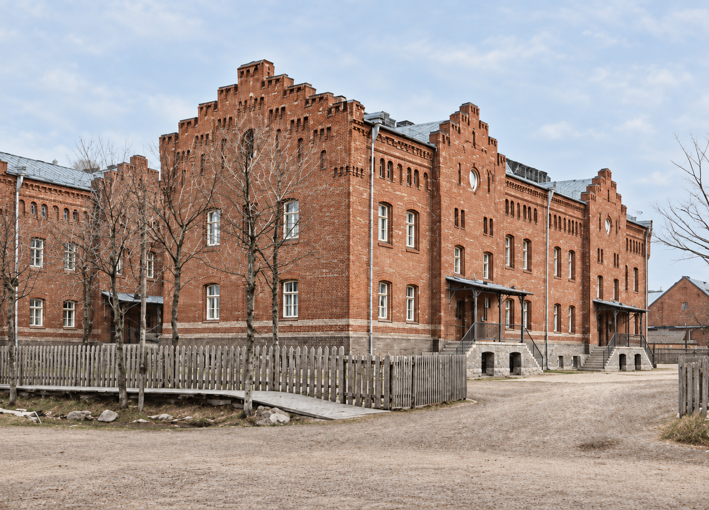

KREENHOLMI INGLISE MEISTRITE ELAMU
Сохраняем дом.
Продолжаем
его историю.
Joala 26, исторический дом в центре Кренгольма
Исследовать историю
Один дом.
Большая история.
Kreenholmi Inglise Meistrite Elamu — исторический дом, являющийся частью Кренгольмского промышленно-жилого ансамбля. Мы хотим, чтобы он оставался частью живой истории — понятной и близкой следующим поколениям.
Kreenholmi Inglise Meistrite Elamu — часть истории, за которую мы чувствуем ответственность. В старой кирпичной кладке и архитектурных деталях сохранился труд мастеров. Беречь дом для нас — значит уважать этот труд и внимательно относиться к тому, что дошло до наших дней.
Наша цель — сохранить характер здания и сделать его историю ближе людям. Фотографии, воспоминания и семейные рассказы помогают увидеть за фасадом жизнь разных поколений. Мы хотим, чтобы эта связь с прошлым оставалась живой и у тех, кто придёт после нас.
Беречь подлинность
Сохранять исторический облик дома, уважать старые материалы и мастерство тех, кто его создавал. Подходить к каждому изменению бережно и обдуманно.
Сохранять память
Беречь фотографии, документы и воспоминания. За каждым снимком — люди и события, которые помогают понять историю дома и его окружения.
Передавать дальше
Делиться историей дома и объяснять ценность его сохранения. Чтобы будущие поколения могли увидеть подлинное здание и почувствовать связь со своим прошлым.
История
в кадре.
В этих снимках — облик места и лица людей.
Сохраняя фотографии, мы бережём память о них.
Сохраним
связь.
Историю места помогают сохранять люди. Если у вас есть старые фотографии, документы или семейные воспоминания, связанные с домом и его окружением, мы будем рады узнать о них. Даже небольшая подробность может дополнить общую память.
KREENHOLMI INGLISE MEISTRITE ELAMU
Сохранение культурного наследия
Joala 26